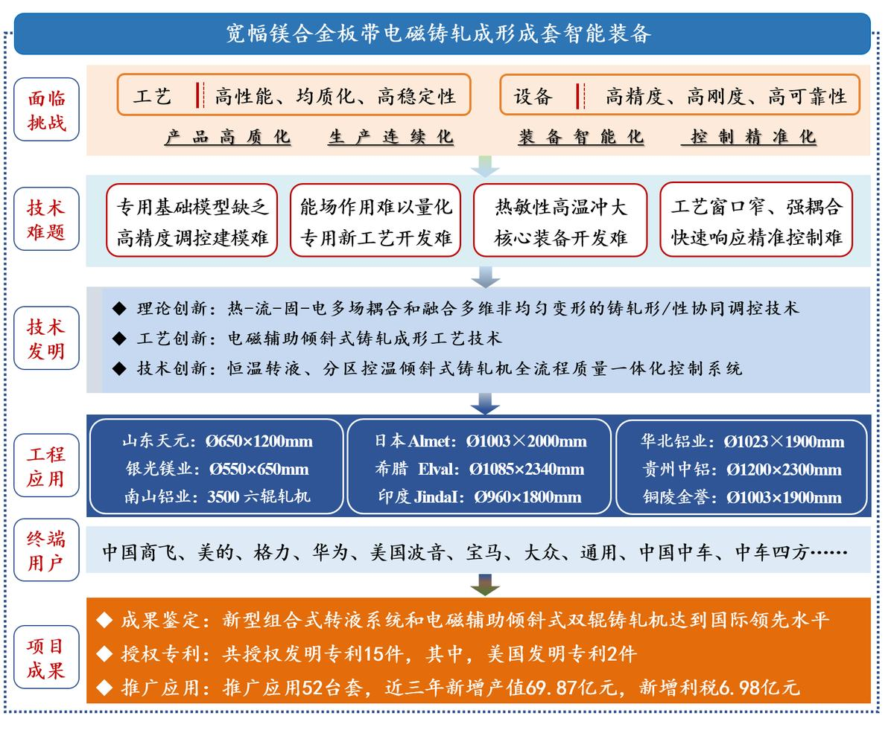
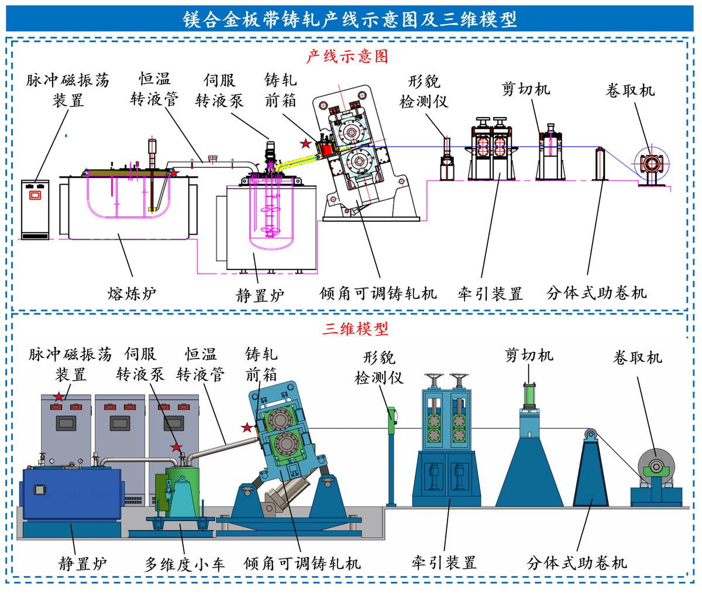
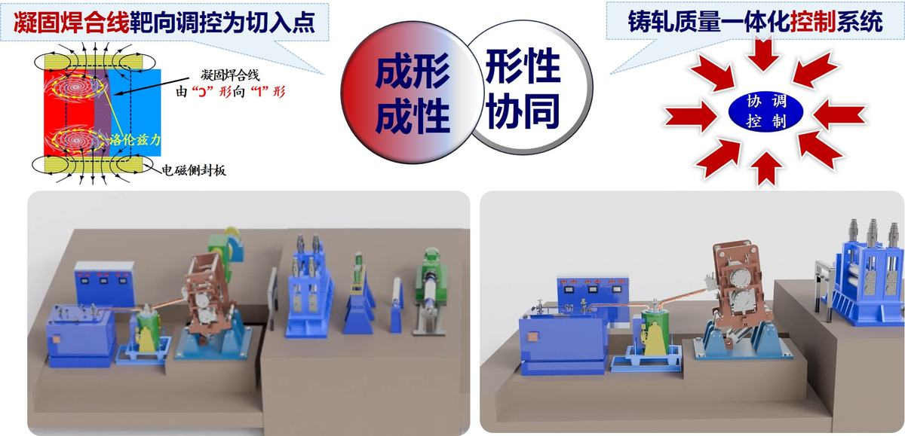

本项目属于有色金属加工领域。
镁合金板带因其显著的减重及其它优异特性，正由功能性应用向结构性应用跨越式发展，如汽车的“四门两盖”、3C 壳体、高铁内衬板等。宝钢数据显示，仅汽车领域未来需求镁合金板带将达到10万吨/年。传统的热/温轧工艺生产镁合金薄板带成材率仅35%左右，成本约9.5-10万元/吨，且制备薄板经多道次轧制形成较强的基面织构，显著降低了其二次成型能力。相较于开坯轧制，铸轧工艺具有流程短、效率高、综合成材率高、成本低等优点，被业界认定为目前镁合金板带理想的制备方式。
然而，目前，镁合金铸轧面临两大挑战：①工艺：镁合金铸轧过程中存在冷却速率不均、不可控多相流动和非平衡溶质分凝等问题，导致纵向延伸不均，引发边裂。②装备：镁合金铸轧前期沿用了铝合金水平铸轧装备中的开放式流槽转液系统、单通道铸轧辊等关键部件进行试生产，对于易燃易爆、温度敏感性高的镁合金，极易形成夹杂、安全风险高，成形性和组织性能均一性难以有效调控，组织性能不均匀、偏析、边裂等问题突出。
本项目针对镁合金板带铸轧存在“理论缺乏、工艺单一、装备落后”的技术困境，以脉冲电磁辅助“靶向”调控凝固焊合线位置、形状为核心策略，开发铸轧全流程形/性协同调控技术为目标，重点解决电磁辅助铸轧工艺基础模型缺乏、调控手段单一、专用装备缺失三大难题，历时十余年，成功开发出镁合金板带电磁铸轧成形关键技术及装备，主要设计发明如下：
① 设计发明了三维流场、温度场、磁场等多物理场耦合的铸轧形/性调控技术；
② 设计发明了电磁辅助倾斜式铸轧成形生产工艺技术；
③ 设计发明了电磁铸轧侧封装置及新型组合式铸轧转液系统，集成研制出电磁辅助调控、倾角可调的双辊铸轧成套技术装备；
④ 设计发明了机理-数据混合驱动的铸轧全流程产品质量一体化控制系统。
项目获发明专利15项（其中，美国专利2项）。该技术装备能够高效、稳定生产厚度0.7～2.0mm、宽度1200mm、卷重达5吨的镁合金板带，同时在高品质铝合金板带制备中也实现了广泛应用，经王振国院士领衔的专家组鉴定为“该成果创新性强，整体技术处于国际先进水平，其中，设计的铸轧专用新型组合式转液系统和电磁辅助倾斜式双辊铸轧机达到国际领先水平”。在日本东洋、八达镁业、银光镁业、贵州铜陵、山东天元等企业推广52台（套），打破国外技术垄断，引领了镁合金电磁铸轧技术发展。近三年新增产值69.87亿元，新增利税6.98亿元，产品在商飞、中车和宝马等企业得到应用。
由于镁合金易燃易爆、热敏性高、室温下滑移系少塑性成形能力差，铸轧过程需在与氧隔离的封闭条件下实施，且出现故障或铸轧过程中断时，确保铸轧系统内镁液能完全回流至静置炉内；同时，镁合金热敏性高，常用的单通道水冷铸轧辊在镁合金铸轧过程存在冷却速率不均，熔体率先在上、下辊表面及侧封板组成的熔池表层形成“舌”状的凝固壳，易造成偏析、组织分布不均等，液相向固相转变形成的凝固焊合线（即Kiss 线）沿板宽方向连线呈“Ɔ”型，导致经辊缝时纵向不均匀延伸，极易诱发边裂。
综上所述，鉴于凝固层焊合线位置和形状既是铸轧工艺参数的综合体现，又与板坯组织性能、缺陷产生和板形具有遗传效应。团队以凝固层焊合线位置和形状的靶向调控为切入点，基于脉冲磁振荡场的电磁搅拌作用，设计了脉冲电磁辅助倾斜式双辊铸轧成套智能装备（如图1所示），其内部具体设计创新点内容如下。
图1脉冲电磁辅助倾斜式双辊铸轧成套智能装备
设计创新点1：针对电磁铸轧基础工艺模型缺乏，构建了包含三维动态流场、温度场、脉冲磁场及固液界面形貌演化的多物理场耦合模型，形成了具有自主知识产权的形/性协同调控理论体系。
镁合金因热敏性高、室温塑性差及铸轧过程中多目标工艺参数耦合机制不明，传统铸轧工艺依赖经验进行参数调控，缺乏多物理场耦合作用下的成形理论支撑，难以实现全流程形/性协同控制，严重制约了铸轧工艺技术在镁合金板带产业中工业化进程。
① 构建铸轧过程三维动态温度场模型，明晰坯壳厚度与固液共存区传热耦合机制，提出了固液两相区三维界面形状函数，为镁合金板带铸轧温度场调控提供基础工艺模型。
鉴于此，团队建立了熔体热辐射、辊内热对流及界面接触热阻的三维动态温度场模型，耦合磁场后，熔体凝固前沿呈现周期性波动特征。基于铸轧速度与温度场分布存在较强的非线性关系，从而提出了电磁搅拌动态补偿换热技术，通过优化边部凝固组织流场分布，将铸轧区凝固界面波动控制在±5mm范围内，为控制凝固过程奠定基础。针对固液两相区界面形态控制难题，研究团队发展了基于相场法的界面追踪技术，传统镁合金凝固界面呈“Ɔ”形，通过调控电磁能场参数和铸轧工艺参数耦合精准调控，成功将界面倾角控制在40°~65°范围内，凝固界面由“Ɔ”趋于“1”形，显著改善了板材组织均匀性（见图2）。
图2电磁铸轧形/性协同调控理论体系
② 综合铸轧前/后滑区接触混合摩擦行为及材料本构模型，建立了分区轧制力能参数模型；采用弹塑性变分和应变矢量内积原理，建立了张力轧制变形区速度场、应变率和应变模型，解决了变形遗传、性能动态变化和混合摩擦下轧制模型精度低的难题。
铸轧过程力能参数在控制系统中处于核心地位，但由于铸轧成形过程涉及热-流-固多场耦合、混合摩擦等复杂工况，现有力能参数模型精度低，制约了工艺控制精度进一步提升。
图3 铸轧分区轧制力能参数理论模型
团队根据铸轧过程中轧制力/轧制力矩特性，研究了铸轧前/后滑区接触混合摩擦行为，构建液相区流场应力、糊状区粘滞应力、固相区单位压力和残余热应力模型，结合材料本构模型，采用微元体分析方法建立固-液两相区、前/后滑区的分区铸轧应力模型（见图3）。研究了多物理场作用下张力轧制变形区内力学性能动态变化的演变规律，明确变形区内速度场、应变及应变率的作用机制，基于应力非均布、混合摩擦模型和材料本构模型，采用弹塑性变分和应变矢量内积原理，建立了张力轧制分区轧制力能参数模型，解决了变形遗传、力学性能动态变化和混合摩擦复杂工况下轧制模型精度低的难题，模型预测精度达95%。
设计创新点2：以电磁脉冲辅助调整凝固焊合线为手段，基于电磁搅拌作用及焦耳热效应，发明了电磁辅助铸轧成形一体化调控技术，构建了“热-电-流-力”多物理场参数化预测模型，设计并开发出倾斜式电磁铸轧生产工艺，实现了镁合金铸轧板带组织性能自主精准调控。
早期镁合金板带铸轧工艺借鉴铝合金水平铸轧。而水平铸轧开放式溜槽存在安全隐患和夹杂问题，影响后续深加工产品质量；由于铸轧区温度场分布不均，现有工艺难以实现对铸轧区熔池的精准调控，导致板带组织（偏析）和性能存在缺陷。为此，团队以电磁脉冲辅助调整凝固焊合线为手段，基于电磁搅拌作用及焦耳热效应，发明了电磁辅助倾斜式铸轧生产工艺技术，实现镁合金铸轧板带组织性能自主在线精准调控。
① 针对铸轧区温降不均、成形性差，且组织性能难以自主调控等难题，建立了电磁辅助镁合金铸轧工艺-微观组织-板带性能之间的构效关系，设计发明了基于凝固层焊合点位置诱导的电磁辅助铸轧组织性能调控新技术，实现了铸轧板带缺陷抑制和塑性提升。
铸轧区存在明显的温度梯度，熔体率先在上、下辊表面及侧封板组成的熔池表层形成“舌”状的凝固壳，经辊缝时纵向不均匀延伸，极易诱发铸轧板边裂；同时，晶体向铸轧坯中心树枝状延伸过程中以“团聚”方式凝固，导致板带组织分布不均、偏析等缺陷，引起严重的非均质化与板材性能降低。
鉴于此，团队发明了基于凝固焊合线电磁脉冲耦合调控技术（见图4），通过在铸轧区侧封板（TD方向边缘5~15mm区域内）布置可重构电磁线圈阵列，构建了“磁场-涡流-热流”多物理场协同调控系统。通过控制脉冲电流频率和幅值，在凝固焊合线区域诱导产生涡流热效应，降低凝固焊合线边部TD向温度梯度。洛伦兹力可促使半凝固态金属产生周期性剪切流动，将“Ɔ”形凝固界面调控趋近于“1”形；电磁搅拌作用有效补偿边部温降、均匀组织、细化晶粒、抑制粘滞，起到控形控性的作用，进而实现板带质量和效率双提升，成材率提高了23%以上。
此外，针对不同规格板带（厚度2-8mm，宽度400-1500mm），设计了无级可变电磁调控模块，采用模块化线圈组合，通过物理增减线圈单元数量实现不同宽度方向的磁场覆盖。该技术突破了传统铸轧工艺的局限性，通过电磁调控实现了凝固组织的精准优化，不仅显著提升了板带成形质量和生产效率，还大幅降低了能耗，为高端镁合金板带的工业化生产提供了可靠的技术支撑，具有广阔的推广应用前景。
图4 基于凝固层焊合点位置诱导的电磁辅助铸轧组织性能调控新技术
② 以铸轧板带组织性能自主精准调控为目标，开发出“热-电-流-力”多物理场参数化协同仿真模型，精细化分析了铸轧区元素分布、凝固组织和板带性能等物理状态信息，实现铸轧工艺参数化精准设定。
针对镁合金铸过程中工艺参数精准的技术性难题，开发出基于“生死单元法”和“热-流-力-微观组织”多物理场耦合协同仿真模型，获得了铸轧区温度场、流场、应力应变场、组织类型、相场分布等物理状态信息，实现了凝固焊合线位置与形状的精准预测。探明了铸轧工艺参数对铸轧区成分偏析和微观组织性能的影响机制，为铸轧机设计参数选型与生产工艺优化、控制模型及控制系统开发提供了理论支撑。
由于镁合金板带双辊铸轧过程涉及导热、凝固、相变等复杂演化过程，导致铸轧区内部演化难以在线追踪检测。基于“生死单元法”，模拟金属熔体从液态到固态的凝固过程。通过动态激活或“杀死”单元，精确捕捉铸轧区温度场、电场、流场和应力场的变化，设计出“热-电-流-力”多物理场参数化协同仿真模型，成功解决了预载力、辊面预热、铸轧速度、冷却水流量和铸轧辊直径、辊身长度等工艺与设备参数优化匹配难题，进而实现铸轧板带组织性能自主精准调控（见图5）。基于仿真结果，通过增大辊径来增加铸轧辊的刚度及凝固区长度，研发成功具有大辊径的第二代超型铸轧机，最大辊径达到Ф1200 mm。相关技术在高品质铝合金铸轧也得到广泛应用，辊面宽度由普通型铸轧机的1800 mm提升至2340 mm，产品规格和生产能力获得新突破。
图5“热-电-流-力”多物理场参数化协同仿真模型
设计创新点3：针对多品种、多规格板带铸轧工艺复杂多变、控制交叉耦合导致产品质量和效率低的难题，设计了电磁铸轧侧封装置、新型组合式铸轧转液系统（专用转液泵、柔性转液管、组合式前箱、液位检测和控制系统），集成研制出电磁辅助调控、倾角可调的双辊铸轧成套技术装备。
为确保熔体凝固过程的均匀性和稳定性，须精确控制浇注温度、浇注速度、前箱液位及铸轧辊温度。鉴于此，团队面向多品种、多规格金属板带的高洁净度、高稳定性、强可控性铸轧技术装备开发，发明了电磁铸轧侧封装置、铸轧倾角调整机构和镁合金铸轧专用新型组合式转液系统，集成研制出电磁辅助调控、倾角可调的双辊铸轧成套技术装备，实现了技术突破。
① 铸轧机：针对多品种、多规格金属板带铸轧最佳倾角各异的要求，基于电磁脉冲调控机制，集成研制出配备电磁铸轧侧封装置的倾角可调式双辊铸轧机，有效解决了可铸轧板带规格范围窄、铸轧稳定性低和组织性能不均一等问题。
铸轧机倾角是影响铸轧生产稳定性的关键参数之一。倾角调整不合理会导致铸轧过程中金属偏析、氧化膜表面张力等问题，造成板材组织不均匀、边裂等缺陷，影响性能稳定性。尤其在多材质、多规格产品生产中，不仅要求边部与中部温降速度尽量保持一致，还要求铸轧速度、铸轧温度与辊缝高度合理匹配，进而保证铸轧过程中产品组织性能的稳定性。鉴于此，团队设计了一种具有电磁搅拌功能的铸轧侧封装置，该装置包含两组电磁组件，第一电磁组件配置在铸轧区内产生电磁搅拌作用，促进组织内热交换的同时形成焦耳热效应；第二电磁组件配置在铸轧区侧边部，降低侧封板与相邻铸轧区凝固组织端面之间接触形成的粘滞阻力，进而实现铸轧板材控形控性的目的。
为提供合理辊缝高度，团队发明了一种四连杆机构调整倾角的铸轧机，倾角在0~20°范围内任意可调，调整前后铸轧中心的偏移量不超过2 mm，在满足万向接轴的自适应范围要求的同时，提高了铸轧过程稳定性和产品的组织性能。同时，团队建立了镁合金板带铸轧最佳倾角的预测模型，精度达95%以上，解决了倾角测量与控制难题。集成上述技术，设计了电磁辅助调控、倾角可调的倾斜式铸轧机（见图6）。
图6电磁辅助调控、倾角可调的倾斜式铸轧机
② 转液系统：针对转液系统内溶液无法回收、洁净度低、液位不可控等技术难题，设计了专用转液泵、自适应热膨胀转液管和液位可控的组合式前箱装置及自适应铸轧机倾角的多维度可调熔炼炉小车，集成研制出高品质镁合金铸轧专用新型组合式转液系统。
镁合金溶液铸轧过程中暴露在空气中极易发生燃烧、甚至爆炸；同时，在浇注完成或突发故障时，浇铸系统内镁液无法完全回收，导致安全隐患及材料浪费。鉴于此，团队设计出了一种安全、经济、便于维护的新型组合式镁合金转液系统（见图7）。该系统包括带有下端锥形孔腔的伺服转液泵、自适应热膨胀转液管、组合式前箱、自适应铸轧机倾角的多维度可调熔炼炉小车等装置。自主设计的带有一定倾角的伺服转液泵壳体可保障浇铸系统内镁液的有效回收，提高了设备的可靠性和维护的便捷性，并使镁液的利用率提高了约10%，转液泵的故障率降低50%。组合式前箱设置的测温装置、液位计及流量控制阻塞装置的设置可实现液位高度（±1mm）、温度控制（±10℃）及流量的精确控制；同时，组合式前箱的惰性气体保护措施及高液位计的设置，保障了铸轧安全生产和熔液洁净度。
为适应柔性化生产要求，铸轧机倾角须不断调整，导致熔炼炉的位置也需要做出相应调整。而浇注系统的移动导致镁液不稳定，最终影响铸轧板材产品质量和铸轧速度。鉴于此，为满足铸轧系统的稳定、高效要求，开发出一种前后、高低位置均可平稳微调的多维度可调熔炼炉小车，有效补偿了因铸轧机本体倾角调整而造成铸轧前箱与熔炼炉布置位置的偏差，辅助实现了熔炼炉与铸轧转液系统前箱的可靠连接，保证铸轧过程溶液的定量供应，此外，构建了熔炼炉小车空间数学模型，实现了熔炼炉小车和倾角可调铸轧机自适应匹配。
图7 镁合金铸轧专用新型组合式转液系统
设计创新点4：面向宽幅镁合金板带铸轧多工序、高精度、高稳定性工艺控制需求，提出了以凝固焊合线“靶向”调控为核心的多目标协同调控方法；以关键工艺运行指标在线感知和即时调控为导向，构建了铸轧流程化多参量耦合的板带三维形状控制模型，设计了机理-数据混合驱动的铸轧全流程产品质量一体化控制系统。
响应快、精度高、运行稳定的自动控制系统是实现工艺目标、体现装备能力、确保产品质量的决定性条件。铸轧全流程控制目标多、形性协同调控因素复杂，特别是涉及到工况复杂多变、稳定性差、工艺遗传性强、多变量强耦合的亚快速冷却凝固过程，传统机理模型难以满足高精度质量在线调控过程需求。因此，基于机理模型可以映射浇注过程形态特征，结合工业生产数据快速准确采集的优势，团队以提升产品质量为最终目标，以铸轧过程关键工艺运行指标在线感知和即时调控为导向，建立了多工序协同一体化控制方法，设计出机理-数据混合驱动的宽幅板带铸轧产品质量一体化集成控制系统，实现了铸轧全流程三维形状的精确控制。
① 面向宽幅镁合金板带铸轧多工序、高精度、高稳定性工艺控制需求，提出了以凝固焊合线“靶向”调控为核心的多目标协同调控方法；以关键工艺运行指标在线感知和即时调控为导向，构建了铸轧流程化多参量耦合的板带三维形状控制模型，设计了机理-数据混合驱动的铸轧全流程产品质量一体化控制系统。
浇注过程前箱熔融态金属液位控制精度，是决定全线能否稳定生产的关键。前箱液位的变化直接导致铸轧区熔池液位的波动，从而引起全线设备运行状态失稳，产生大量铸轧板带缺陷，甚至发生生产事故。因此，浇注系统内熔融金属实时温度、液位及浇注速度的高精度协同控制，是提高初始凝固坯壳厚度、板坯质量和铸轧过程稳定性的重要保障。
图8转液速度和液位协同调控原理图
团队基于自主开发的恒温转液及在线实时检测系统，将PID控制器、模糊控制器和串级控制方案相结合，开发了串级模糊自适应PID控制器，实现前箱温度和液位的精确控制，提升了前箱熔体温度控制响应速度，有效抑制温冲，实现铸轧浇注温度控制精度±10 ℃；基于宽幅镁合金凝固过程机理，采用循环神经网络（RNN）和长短记忆网络（LSTM）算法，通过深度表征数据中的内在规律来驱动机理模型，实现凝固过程转液速度、液位、铸轧速度之间的精准匹配，结合实测铸轧板带厚度数据，即时设定前箱液位及在线调整铸轧速度，最终实现液位、铸轧速度、铸轧力及辊缝的协同精准调控。前箱内液位控制精度达到±1 mm，实现转液速度和液位的精准控制（见图8）。
此外，开发了前箱液位极限保护装置和控制方法，当液位达到极限位置立即停车，以避免熔液溢出，造成工业生产过程中的安全隐患。镁合金板带铸轧稳定生产速度分别由1000~2000mm/min提升至2000~3000mm/min，最高铸轧生产速度达6000mm/min，该系统突破大幅度提升了铸轧速度，在确保安全性的同时显著提升了镁合金铸轧生产效率，为产业化应用提供了可靠保障。
② 提出基于工业数据在线矫正的CMAC神经网络算法，构建了融合凝固过程特性及生产数据的铸轧压力高精度控制方法，实现了浇注过程铸轧板带厚度的精确控制，解决了坯壳厚度与铸轧压力难以有效协调带来的厚度波动大和表面缺陷的难题。
镁合金铸轧过程是液态向半固态、固态转变的复杂过程，铸轧力稳定控制是板带厚度精度的重要保障。浇注过程来料温度、流量、拉速等参数是导致浇注坏壳厚度波动，影响铸轧力稳定性的主要因素。因此，团队以镁合金板带铸轧凝固相变理论为基础，设计了一种基于凝固特性和生产数据的高精度铸轧力控制方法，实现铸轧板带厚度的精确控制。
首先，依据浇注过程关键工艺数据，结合固液两相状态下金属变形规律，精确计算凝固过程中的原始坯壳厚度；其次，基于原始坯壳厚度、预期压下率、批次合金成分工艺数据，依据产品目标值反向寻优目标铸轧力。鉴于铸轧生产的复杂性和多变量耦合特征，在实际生产中，铸轧辊的压下量与铸轧压力的变化并不严格遵循经典的轧机弹跳方程，团队创新性地开发了基于工业数据在线矫正的CMAC神经网络算法，能够基于产品目标逆向寻优，实时、快速且高精度地调整在线辊缝（见图9）。通过对不同凝固状态下铸轧压力的动态设定，完成不同规格铸轧板带变形量在线寻优调控，降低了非稳定状态下铸轧板带缺陷率，实现了铸轧板带厚度的精确控制。
图9 数据驱动的铸轧压力综合调控原理图
面向高端、智能装备的制造要求和高质、高效的使用要求，基于团队建立的铸轧理论和研发的工艺模型、核心装备技术，实现了理论模型、全流程工艺、技术装备的系统集成，开发出拥有完全自主知识产权的镁合金板带铸轧系列成套装备，形成了铸轧机设计行业标准，解决了困扰铸轧行业的性能均匀性、工艺稳定性和设备可靠性三大难题。采用近终型铸轧工艺，生产出宽幅1.2米、薄度0.7～2毫米、单卷重1.5～5吨的镁合金卷板，与传统的“热轧开坯法”相比，降低能耗80％以上，填补了国内大卷重宽幅镁合金铸轧板市场空白，相关成果在山东天元重工、银光镁业实现推广应用（见图10）。
图10 山东天元重工镁合金铸轧机应用现场
同时，团队将开发的铸轧成套技术装备成功推广应用于高品质铝合金薄带生产，在华北铝业、贵州中铝铝业、铜陵金誉、江苏中科等企业推广应用52台套，其中出口9台套。团队开发的宽幅镁合金板带铸轧机成功入选2024年工信部发布的首台（套）重大技术装备推广应用目录，国务院国有资产监督管理委员会官网报道：成套铝带铸轧机设备实现了出口零的突破。新技术应用后，镁合金薄带的组织和力学性能良好稳定，产品成功应用于华为、中国商飞、美国波音、中国中车、中车四方等企业。



镁合金电磁铸轧成形,成材率从 35% 提升,汽车轻量化关键材料
生产线装备
汽车轻量化减耗,间接惠及出行
镁合金板带年需求 10 万吨级,市场明确
轻量化新材料国产化的代表